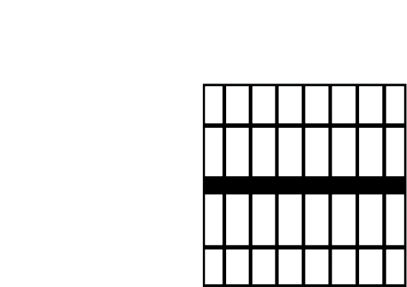

Dusk Of Lies

What is Dusk Of Lies??? Well, "Dusk of Lies" is a gripping text-based
detective game that immerses players in a dark and complex world of
crime and deception. Set in a city shrouded in shadows, players take on
the role of a seasoned detective tasked with solving a series of
high-stakes cases that are shrouded in secrecy and lies.
With a wide variety of cases to investigate, players must use their keen
investigative skills to gather evidence, interview witnesses, and
analyze clues to uncover the truth behind each crime. As the story
unfolds, players will encounter a cast of colorful characters, each with
their own secrets and motives, making it a challenge to discern fact
from fiction.
Throughout the game, players will be faced with tough choices that will
determine the course of the investigation. As they piece together the
evidence and get closer to the truth, they will have to decide who to
trust and how to proceed, all while managing the ever-present threat of
danger and corruption.
With a rich and immersive narrative, "Dusk of Lies" offers a thrilling
and engaging experience that will keep players on the edge of their
seats. Whether you're a seasoned fan of detective games or a newcomer to
the genre, "Dusk of Lies" is sure to leave you wanting more, as you
navigate the twists and turns of a world full of darkness, deceit, and
danger.
You have 7 points!